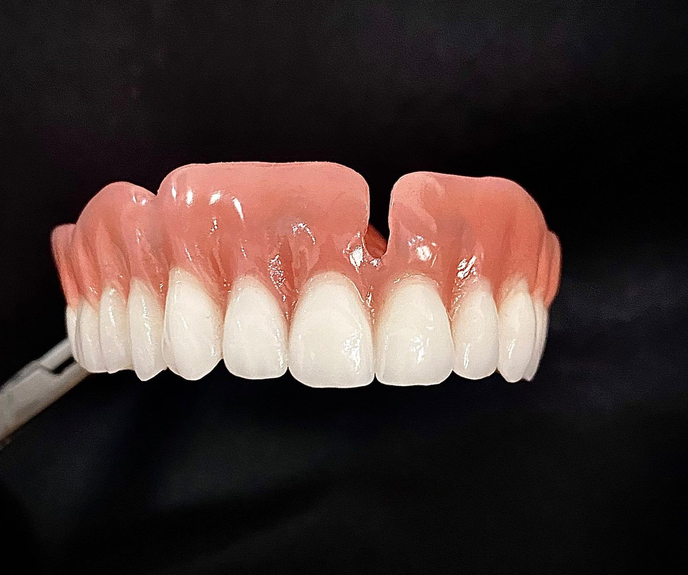
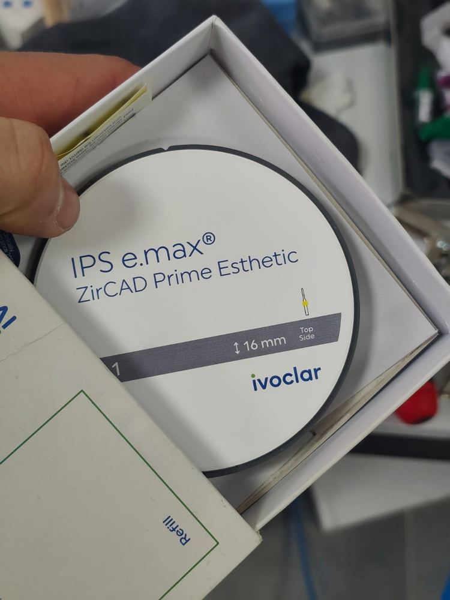
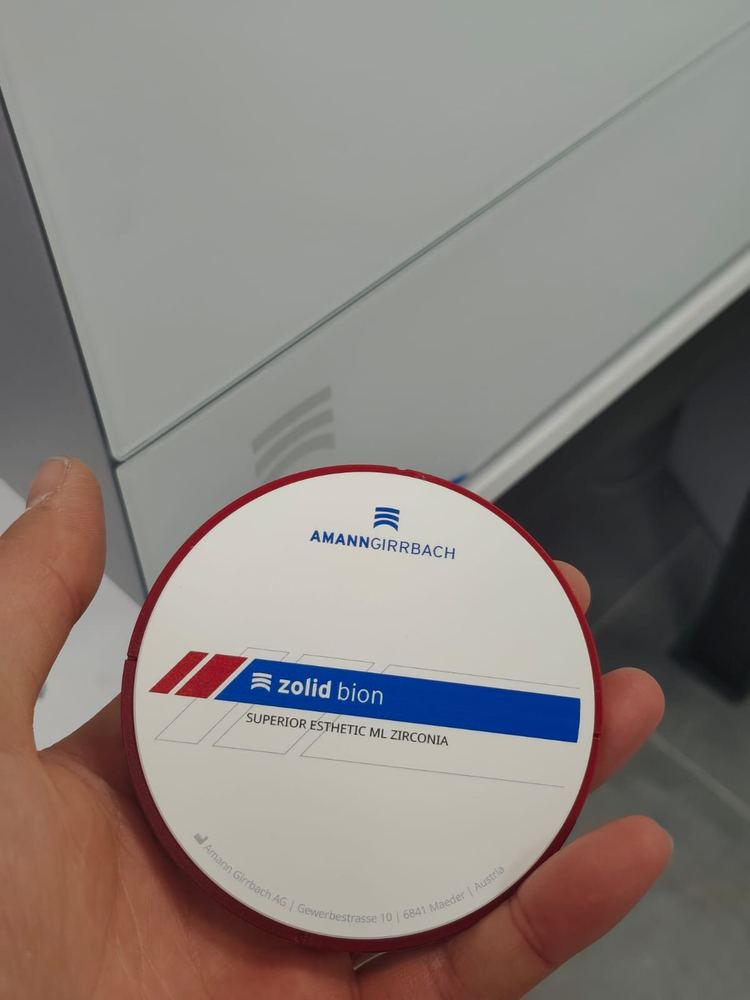
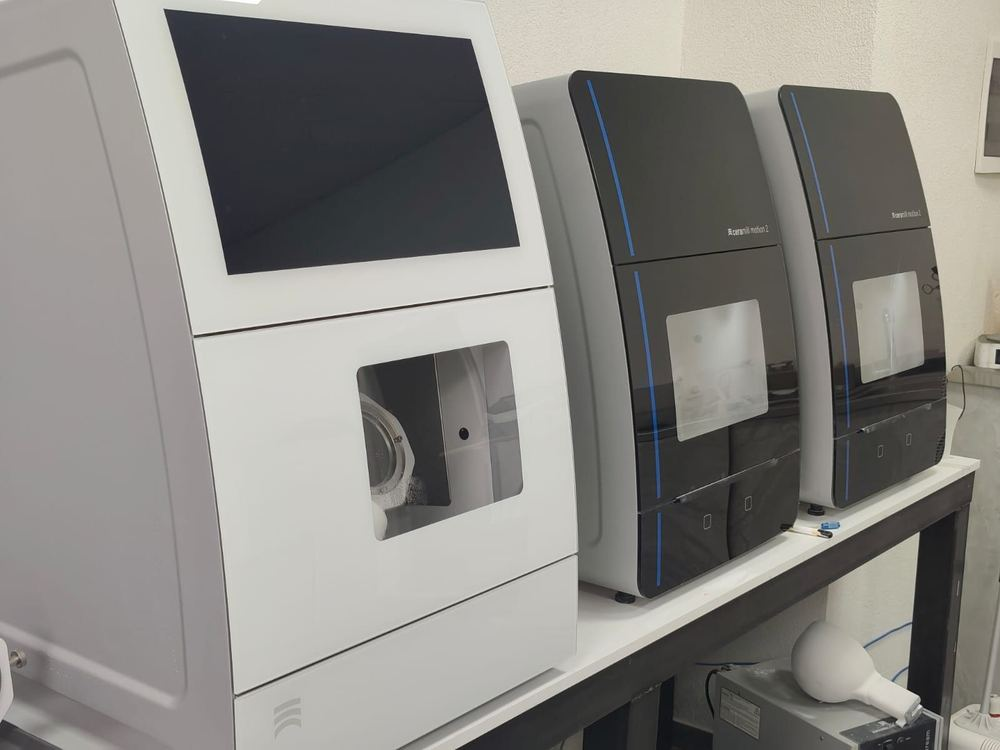
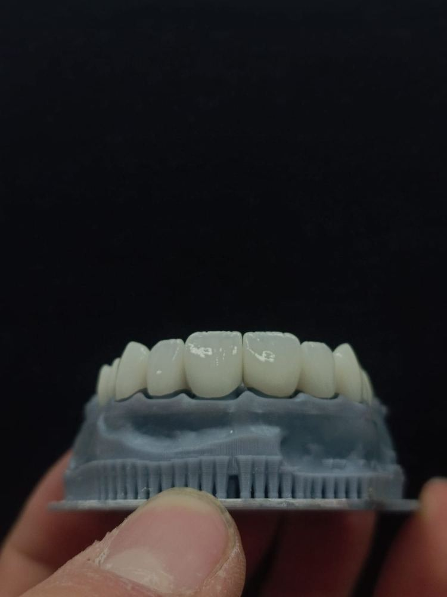
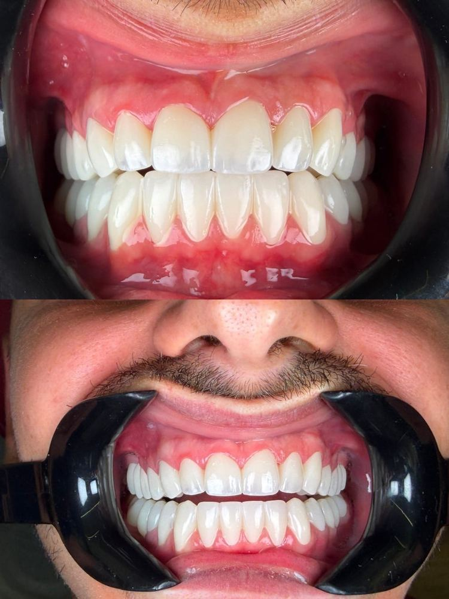
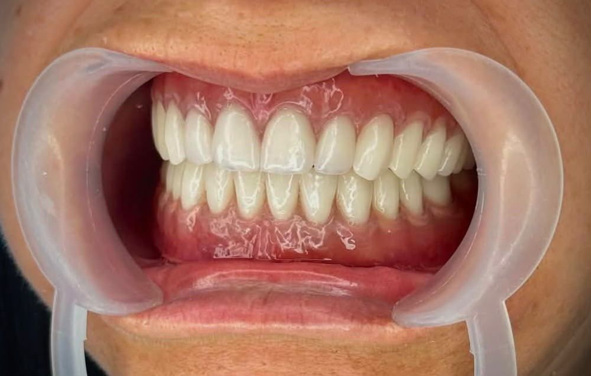
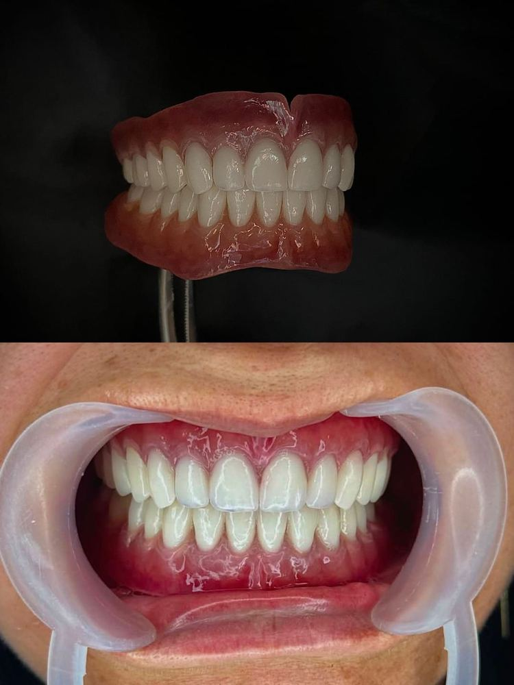
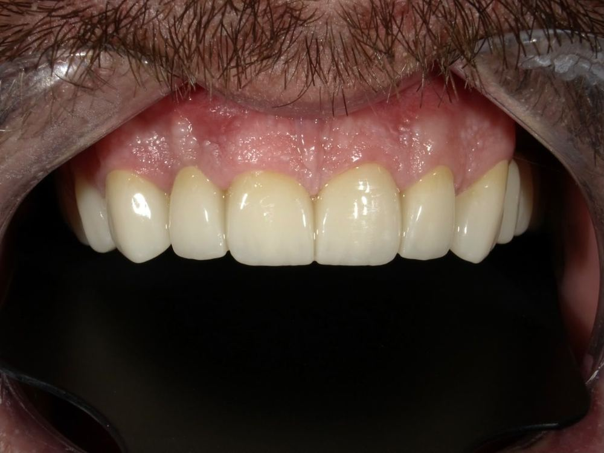
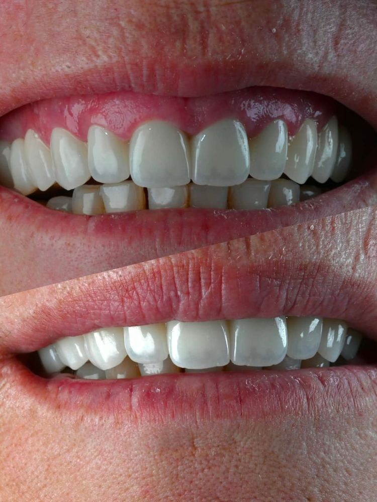

Zahntechnik aus unserem Labor im Kosovo, geliefert in Ihre Praxis
Kronen, Brücken, Veneers und Prothesen aus Markenmaterial von Ivoclar und Amann Girrbach, digital gefertigt in unserem Labor. Ihr Ansprechpartner sitzt in der Schweiz.
- 5–7 Arbeitstagefür Kronen und Brücken ab Scan, mit Expressversand in die Praxis
- 3 Fräsanlagenvon Amann Girrbach im eigenen Labor, dazu 3D-Druck für Modelle und Kronen
- 1 Ansprechpartnerin der Schweiz für Aufträge, Versand und Rückfragen, auf Deutsch
Was das Labor fertigt
Duo'S Dent ist ein digitales Dentallabor im Kosovo. Wir fräsen und drucken mit Anlagen von Amann Girrbach und verarbeiten Markenmaterialien, für festsitzenden und herausnehmbaren Zahnersatz.
Vollzirkon-Kronen
Monolithisches ZirkonHohe Festigkeit für den Seitenzahnbereich, ohne Verblendung und damit ohne Abplatzungen.
Multilayer-Zirkon
IPS e.max ZirCAD Prime oder Zolid BionKronen und Brücken mit natürlichem Farbverlauf vom Zahnhals bis zur Schneide.
IPS e.max Kronen und Veneers
LithiumdisilikatVollkeramik für den sichtbaren Bereich, mit hoher Transluzenz und individueller Charakterisierung.
Zirkonbrücken
Multilayer-ZirkonMehrgliedrige Brücken aus einem Stück, konstruiert am CAD und auf dem Modell kontrolliert.
Metallkeramik
NEM-Gerüst, keramisch verblendetBewährte Kronen und Brücken, wenn ein Metallgerüst gewünscht ist.
Totalprothesen
KunststoffHerausnehmbarer Zahnersatz mit Aufstellung, Anprobe nach Absprache.
Flexible Teilprothesen
Thermoplastischer KunststoffLeicht und ohne Metallklammern, für einen unauffälligen Halt.
Implantatarbeiten
Titan oder PEEKAll-on-4 und All-on-6 auf gefrästem Titansteg oder PEEK-Gerüst.
So läuft ein Auftrag ab
Sie arbeiten wie mit jedem anderen Labor. Bestellung, Abholung, Versand und Rückfragen laufen über Ihren Ansprechpartner in der Schweiz.
Scan oder Abdruck
Sie senden den Intraoralscan als STL-Datei. Abdrücke holen wir ab und schicken sie per Express ins Labor.
Design und Freigabe
Das Labor konstruiert die Arbeit am CAD. Auf Wunsch erhalten Sie das Design vorab zur Freigabe.
Fertigung
Fräsen oder Drucken, Sintern, Charakterisieren und Glanzbrand, mit Kontrolle auf dem Modell.
Lieferung
Die fertige Arbeit kommt per Expresskurier in die Praxis, mit Konformitätserklärung für Sonderanfertigungen.
Markenmaterial und eigene Fräsanlagen
Das Labor arbeitet mit denselben Materialien, die auch Schweizer Labore verwenden. Zu jeder Arbeit erhalten Sie den Materialnachweis.




Digitaler Workflow
Das Labor übernimmt Intraoralscans als STL-Datei und arbeitet vollständig digital: Konstruktion am CAD, Fräsen von Zirkon, Glaskeramik und Titan, 3D-Druck von Modellen und Schienen.
Dokumentation für die Schweiz
Jede Arbeit kommt als Sonderanfertigung mit der vorgeschriebenen Erklärung und den Angaben zu den verwendeten Materialien. So können Sie Ihren Patientinnen und Patienten Herkunft und Material jederzeit belegen.
Arbeiten aus dem Labor
Eine Auswahl abgeschlossener Fälle von Duo'S Dent: festsitzende Versorgungen, Totalprothesen und Frontzahnkronen.





Zusammenarbeit
- Lieferzeit
- Kronen und Brücken in der Regel 5–7 Arbeitstage ab Scan. Prothesen mit Anprobe nach Absprache.
- Versand
- Expresskurier, zweimal pro Woche gesammelt, direkt in Ihre Praxis.
- Passung
- Passt eine Arbeit nicht, wird sie kostenlos neu gefertigt.
- Abrechnung
- Eine monatliche Sammelrechnung in Schweizer Franken.
Häufige Fragen
Wie gut ist die Qualität im Vergleich zu einem Schweizer Labor?
Das Labor verarbeitet dieselben Markenmaterialien wie Schweizer Labore, etwa IPS e.max von Ivoclar und Zolid Bion von Amann Girrbach, und fräst auf Anlagen von Amann Girrbach. Am einfachsten prüfen Sie es mit einem Testfall: Sie sehen Passung, Ästhetik und Lieferzeit, bevor Sie sich festlegen.
Was brauchen Sie für einen Auftrag?
Einen Intraoralscan als STL-Datei und den Auftrag mit Zahnfarbe und Angaben zur Versorgung. Arbeiten Sie mit Abdrücken, holen wir diese bei Ihnen ab.
Wie gehen Sie mit Patientendaten um?
Für die Fertigung braucht das Labor keine Namen. Aufträge laufen über eine Fallnummer, Scan und Auftrag enthalten keine Personendaten Ihrer Patientinnen und Patienten.
Wer kümmert sich um Zoll und Einfuhr?
Wir. Die Arbeiten kommen verzollt in Ihre Praxis, und Sie erhalten eine Rechnung in Schweizer Franken.
Sind die Arbeiten als Medizinprodukte dokumentiert?
Ja. Jede Arbeit kommt als Sonderanfertigung mit der vorgeschriebenen Erklärung und den Angaben zu den verwendeten Materialien. So können Sie Ihren Patientinnen und Patienten Herkunft und Material jederzeit belegen.
Was passiert, wenn eine Arbeit nicht passt?
Dann wird sie kostenlos neu gefertigt. Korrekturen besprechen Sie mit Ihrem Ansprechpartner in der Schweiz, der sie direkt mit dem Labor klärt.
Testen Sie uns mit einem Fall
Schicken Sie uns Ihren nächsten Prothesen- oder Brückenfall. Sie sehen Qualität, Passung und Lieferzeit, bevor Sie sich festlegen.